Harris Corner detector was used to find possible interest points. The algoirthm for this operates on a sliding window. However, these sliding windows represent a lot of repeated actions, so I calculated the gradient, square gradients, and cornerness on a image wide scale. This speeds up the processing and simplifies the code, but still calculates the same items. I applied a small gaussian filter before the corner detector to blur the image to reduce the effect of large spikes in high frequencies. I also apply a gaussian filter afterwards to the calculated cornerness. This is a filter with a larger filter. This smooths the cornerness over a larger area in preperation for non-maxima suppression.
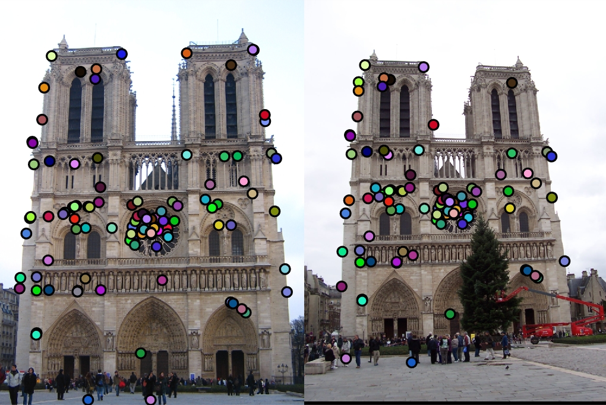SIFT was the feature type of choice. It uses 4x4 cells centered around the interest point. Each cell is subdivided into 8 bins based on orientation. The gradient magnitude of all pixels located within a cell is added to a bin based on its gradient orientation. I used imgradient to calculate the magnitude and orientation of the image. Blurring the image before finding these items using a feature_width/2 sized filter with a sigma of 4 was found to give ~10% increase in accuracy. The gaussian effectively smooths out spikes causing noise and other effects to have less affect on the gradient calculations. After binning, the final histogram was normalized, thersholded at 0.2 and then normalized again. This produce another ~10% gain in accuracy. This again reduced the effect strong spikes have on the overall value of the historgram.
Previously for testing feature matching before writing the more complex SIFT feature, a simple 16x16 patch was used as the histogram. The change from a simple histogram to SIFT produced a staggering 20% increase in accuracy. The choice of histogram is very important to the viablity of the pipeline.
To match features, nearest neightbor distance ratio test was used. The distance between all features in one image to the features in the other image were calculated and sorted. The smallest two distances were kept and used to calculate the NNDR which is d1/d2 where d1 is the smallest distance. One mistake that I made at first was using this directly as a confidence. This number goes down as the second closest feature moves farther away which means the feature at d1 is more likely the matching item thus higher confidence. 1 - d1/d2 was used as confidence instead. Finally, these confidences were thresholded to reduce the false positives. The threshold of 0.35 was used as it produces about 100 interest points being matched. This produces 81% accuracy with 108 interest points
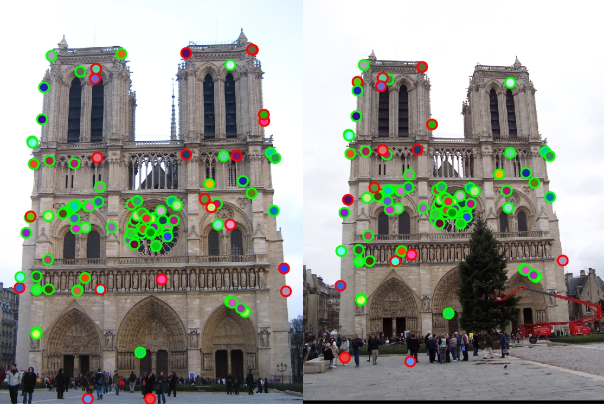 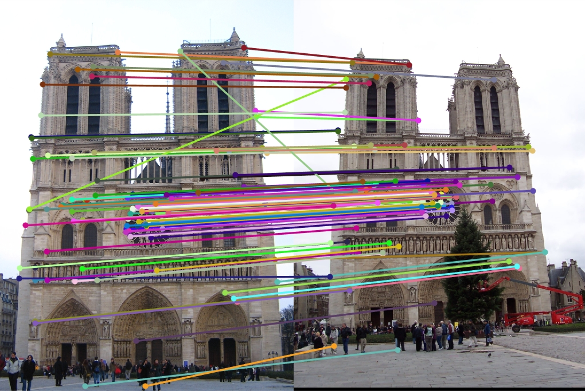84% accuary with 50 interest points. The similar color and overall smoothness in a lot of area resulted in much lower confidence in points found reducing the overall number of points.
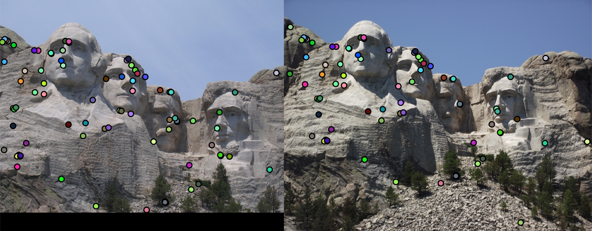 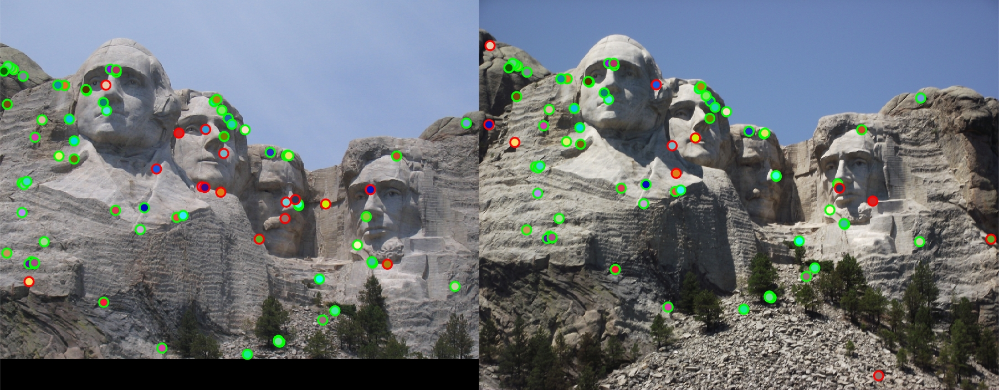 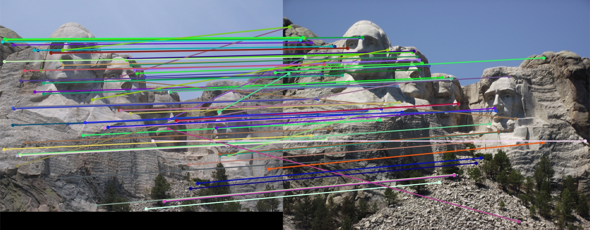10% accuracy with 39 interest points. The large change in scale greatly effect the pipelines ability to understand the difference between points. The confidence threshold was reduced to allow this many points through.
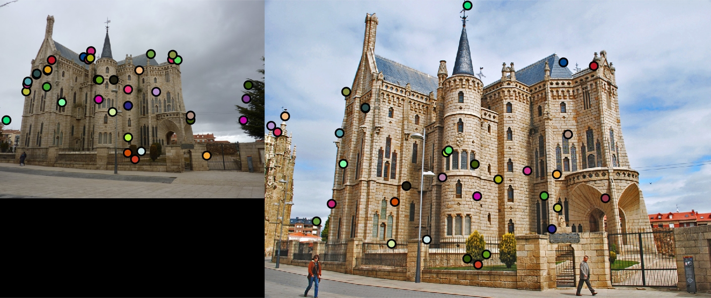 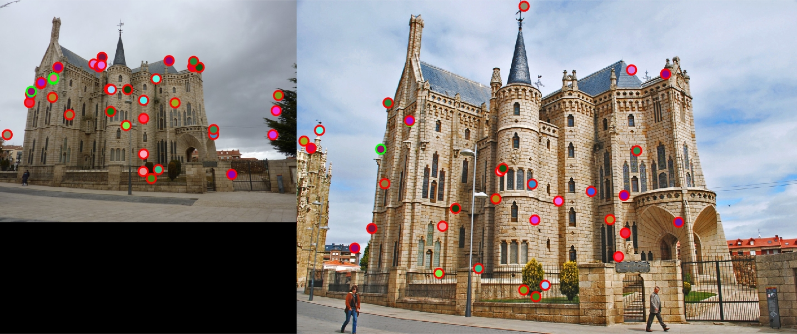 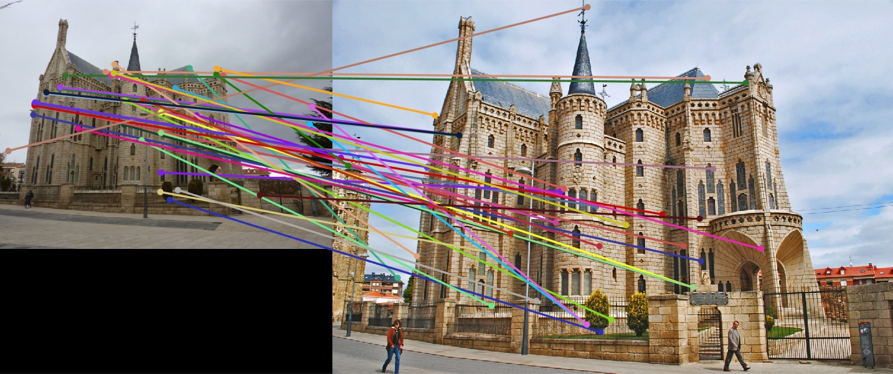It was not able to match many points. Please notice the small point on the hill in the background was matched. Overall the different scale along with oddly different saturation probably resulted in the failures.
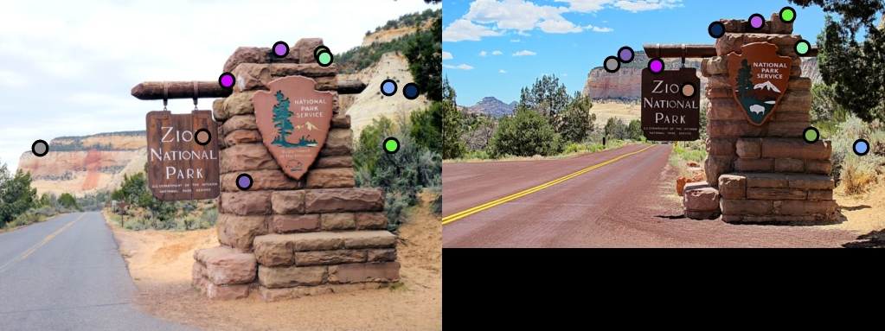 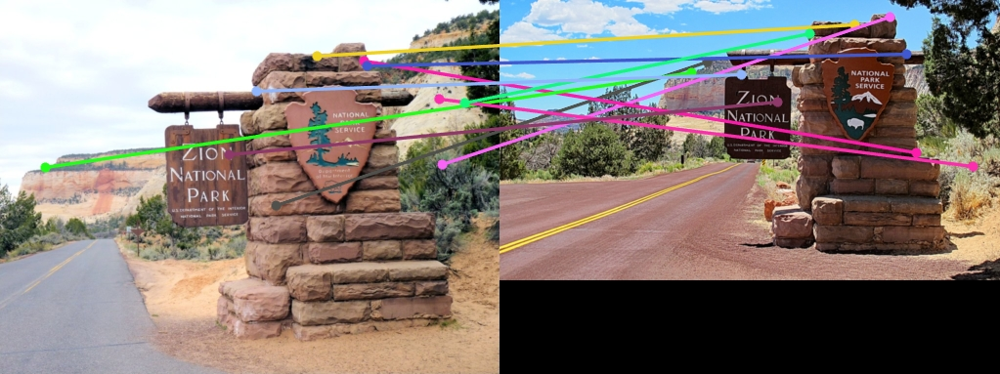